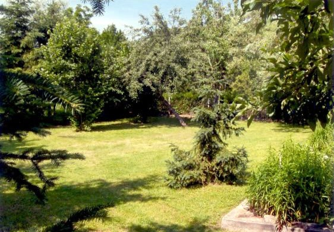
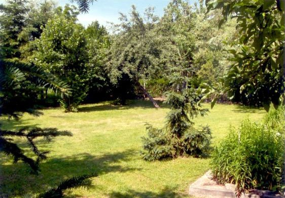
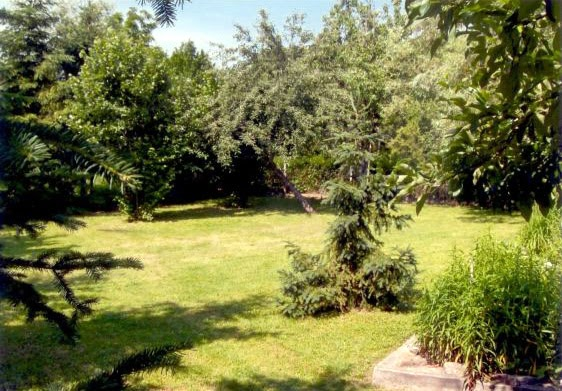

A ház lenti részén találhatóak a közös helyiségek, és két szoba. Az emeleten helyezkedik el a további két szoba. Minden szobában két ágy található. Ágyneműt és törölközőt biztosítunk. Az étkezőben 8 személyes asztal áll, a konyhában 8 fő részére található étkészlet

| Időtartam | 1-4 fő esetén | 5-8 fő esetén |
|---|---|---|
| 2 éjszakára | 48.000.-Ft | 64.000.-Ft |
| 3 éjszakára | 67.500.-Ft | 90.000.-Ft |
| 4 éjszakára | 84.000.-Ft | 112.000.-Ft |
| 5 éjszakára | 97.500.-Ft | 130.000.-Ft |
| 6 éjszakára | 108.000.-Ft | 154.000.-Ft |
| 7 éjszakára | 115.500.-Ft | 154.000.-Ft |